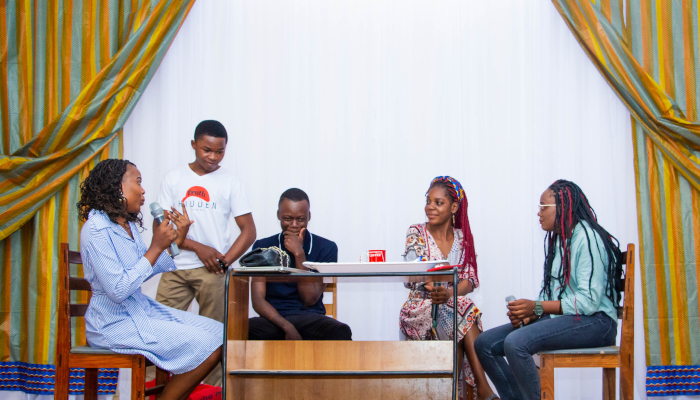

L’École supérieure d’informatique Salama a toujours marqué d’une pierre blanche la
journée internationale des droits de la femme. C’est dans ce cadre qu’elle a organisé
le samedi 26 mars 2022 une journée de réflexion sous le thème : « L’égalité aujourd’hui
pour un avenir durable. »
Esis a reçu, pour cette journée, la visite de la Sr Albertine, Directrice générale de
l’Institut Supérieur des Arts et Métiers Marie auxiliatrice, ISAMM en sigle.
La journée a démarré par une messe célébrée par l’aumônier de Esis, le Père Jean-Marie
MUSHIBWE. Dans son homélie, le Père Jean-Marie, parlant de la parabole du pharisien et
du collecteur d’impôts, a appelé l’assistance à avoir non une conscience erronée, mais une conscience droite.
Après la messe, Mesdames Allegra NZEBA et Ida KAKUMBI ont développé le thème du jour, clamant essentiellement que :

L’étape suivante de la journée a été consacrée à la présentation par des étudiantes de Esis de certaines de leurs réalisations. Du Design aux applications en Réseaux, en passant par le développement web, la femme en formation à Esis a tenu à montrer qu’aucune spécialité de Esis ne lui est interdite.

Puis sont intervenues des activités récréatives, notamment des chants et des sketchs, pour détendre
les étudiants en cette journée où la femme d’Esis était au centre de toutes les attentions. Et
pendant ce temps, les permanents de Esis avec leurs invités étaient conviés à un cocktail.
Il est à noter qu’à Esis la femme, comme étudiante, ne souffre d’aucune discrimination,
étant formée dans les mêmes conditions que son collègue étudiant. Et dans l’administration,
la femme est représentée au comité de gestion, dans les coordinations de filières, parmi les
ouvriers, et même dans la sécurité.
Actualites